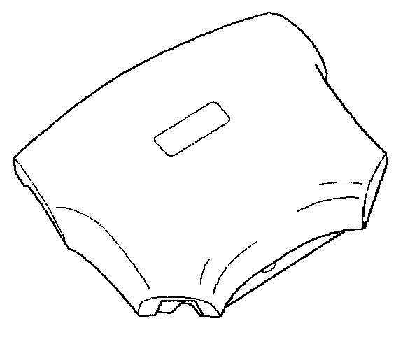
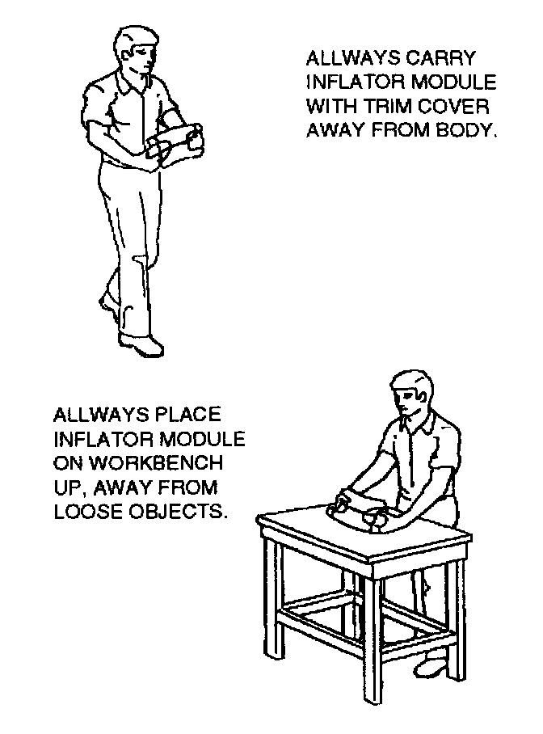

Undeployed Air Bag Assembly
During the course of a vehicle's useful life, certain situations may arise which will necessitate the disposal of a live (undeployed) air bag assembly. This information covers proper procedures for disposing of a live air bag assembly.
Before a live air bag assembly can be disposed of, it must be deployed. A live air bag assembly must not be disposed of through normal refuse channels.


Special care is necessary when handling and storing a live (undeployed) air bag assembly. The rapid gas generation produced during deployment of the air bag could cause the air bag assembly, or an object in front of the air bag assembly, to be thrown through the air in the unlikely event of an accidental deployment.
WARNING: FAILURE TO FOLLOW PROPER SUPPLEMENTAL RESTRAINT SYSTEM (SRS) AIR BAG ASSEMBLY DISPOSAL PROCEDURES CAN RESULT IN AIR BAG DEPLOYMENT WHICH MAY CAUSE PERSONAL INJURY. AN UNDEPLOYED AIR BAG ASSEMBLY MUST NOT BE DISPOSED OF THROUGH NORMAL REFUSE CHANNELS. THE UNDEPLOYED AIR BAG ASSEMBLY CONTAINS SUBSTANCES THAT CAN CAUSE SEVERE ILLNESS OR PERSONAL INJURY IF THE SEALED CONTAINER IS DAMAGED DURING DISPOSAL. DISPOSAL IN ANY MANNER INCONSISTENT WITH PROPER PROCEDURES MAY BE A VIOLATION OF FEDERAL, STATE, AND / OR LOCAL LAW.
In situations which require deployment of a live air bag assembly, deployment may be accomplished inside or outside the vehicle. The method employed depends upon the final disposition of the particular vehicle, as noted in "Deployment Outside Vehicle" and "Deployment Inside Vehicle".
WARNING: WHEN CARRYING A LIVE AIR BAG ASSEMBLY, MAKE SURE THE BAG OPENING IS POINTED AWAY FROM YOU. IN CASE OF AN ACCIDENTAL DEPLOYMENT, THE BAG WILL THEN DEPLOY WITH MINIMAL CHANCE OF INJURY. NEVER CARRY THE AIR BAG ASSEMBLY BY THE WIRES OR CONNECTOR ON THE UNDERSIDE OF THE MODULE.
Handling/Installation/Diagnosis
1. Air bag assembly should not be subjected to temperatures above 65° C (150° F).
2. Air bag assembly, and SDM should not be used if they have been dropped from a height of 100 centimeters (3.28 feet) or more.
3. When a SDM is replaced, it must be oriented with the arrow on the SDM pointing toward the front of the vehicle. It is very important for the SDM to be located flat on the mounting surface, parallel to the vehicle datum line. It is important that the SDM mounting surface is free of any dirt or other foreign material.
4. Do not apply power to the SRS unless all components are connected or a diagnostic chart requests it, as this will set a diagnostic trouble code.
5. The "SRS Diagnostic System Check" must be the starting point of any SRS diagnostics. The "SRS Diagnostic System Check" will verify proper "AIR BAG" warning lamp operation and will lead you to the correct chart to diagnose any SRS malfunctions. Bypassing these procedures may result in extended diagnostic time, incorrect diagnosis, and incorrect parts replacements.